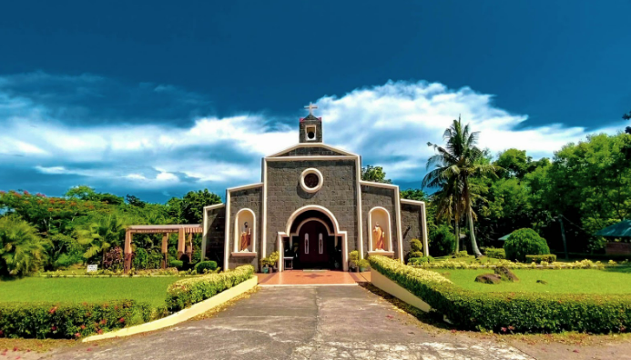
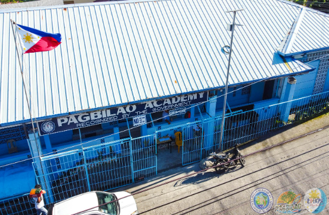
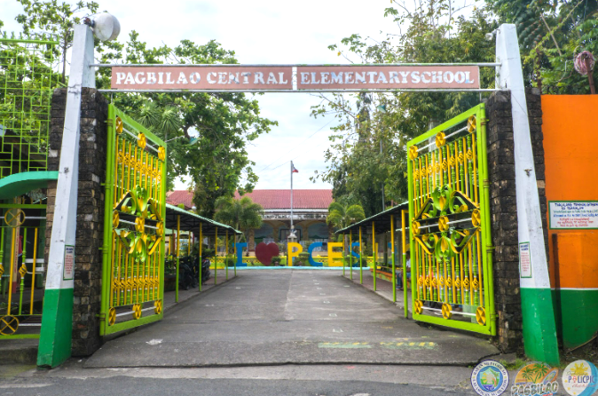
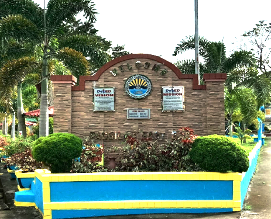
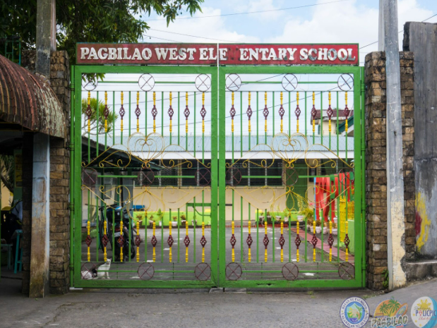
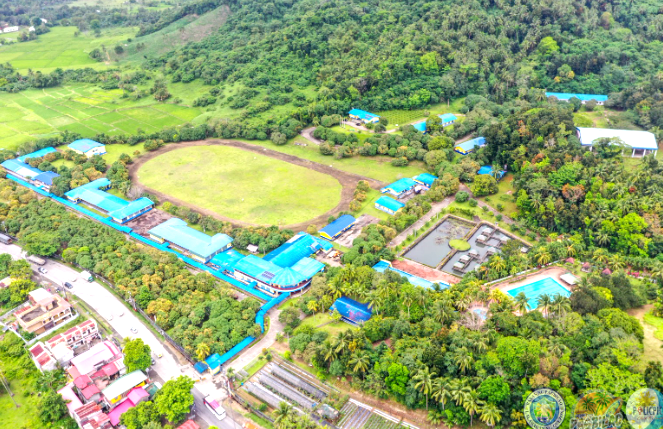
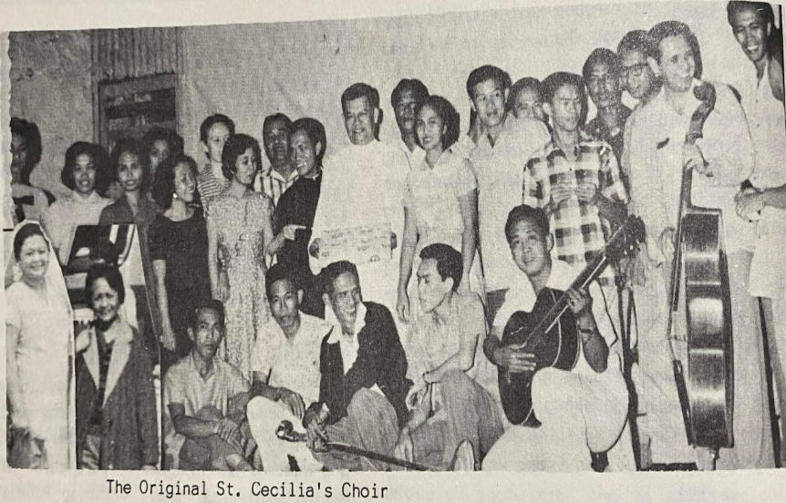
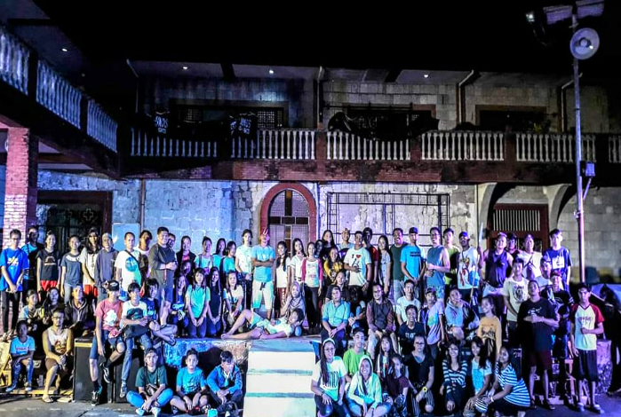

The Pagbilao Band is known not only within the town but also in neighboring towns and regions. It has participated in many festivals and celebrations, strengthening its reputation as one of the best bands in the region.
Location: Banda ng PagbilaoBanda ng Pagbilao

Our Lady of Most Holy Rosary Seminary

The institution has made history as the only training center for aspiring priests in the municipality. Having an institution that serves as a tool for forming ordained ministers is considered one of the town's prides. It not only accepts residents but also people from other countries, including two who came from China and the United States of America, who are now ordained ministers in their respective countries.
Location: Our Lady of Most Holy Rosary SeminaryPagbilao Academy

Pagbilao Academy is a historic institution in the town of Pagbilao, Quezon, which has served as the main school in the community since the colonial period. It has been used to educate the youth and stands as a symbol of education in the region. Visitors come to see its architecture and history.
Location: Pagbilao AcademyPagbilao Central Elementary School

Pagbilao Central Elementary School (PCES) was established in 1912 during the American administration. It is one of the main educational institutions in the town of Pagbilao and has a long history of serving the community. The school has served as a center of education and community, also receiving projects and donations from local and foreign agencies.
Location: Pagbilao Central Elementary SchoolPagbilao East Elementary School

Pagbilao East Elementary School started as a small school during the post-war period. It became a primary institution for education in the town of Pagbilao, Quezon, and continues to serve local students. It is important as an educational institution that has contributed to the development of the community.
Location: Pagbilao East Elementary SchoolPagbilao West Elementary School

Established during the Spanish era, the school served as an educational center for Filipino children in the community. It was also used as a temporary station by American soldiers during World War II. Up to the present, it is actively used as a public school.
Location: Pagbilao West Elementary SchoolQuezon National Agricultural School ( QNAS )

The structure was built during the Spanish era as part of missionary activities in Quezon. It served as a school and town hall for the locals for many decades. Its history has been discovered through oral history and records from the church. Until now, it is used for cultural and educational activities of the barangay.
Location: Quezon National Agricultural School ( QNAS )Sta. Cecilia Chorale Group

The Sta. Cecilia Chorale Group was established during the Spanish colonial period (1560-1898) as part of religious activities in the local church.
Over time, the group grew in membership and gained more modern training and facilities for their performances.
There have been no major changes in their mission, but they have adapted to modern methods of singing.
Talipan National High School
Talipan National High School is one of the main secondary schools in the town of Pagbilao, Quezon. Aside from providing education, it also serves as a center for community activities and as an evacuation center during calamities. It serves many barangays in the western part of Pagbilao.
Location: Talipan National High SchoolTeatro Tanglao ( Teatro Tanghalang Pagbilao )

Teatro Tanglao was built during World War II as part of the arts movement in the province of Quezon. It served as the main venue for local theater, music, and cultural activities. It is one of the few structures in the region that was used as an arts center during that time, and it continues to be used today for performances of original plays, dances, and Filipino music.
Location: Teatro Tanglao ( Teatro Tanghalang Pagbilao )